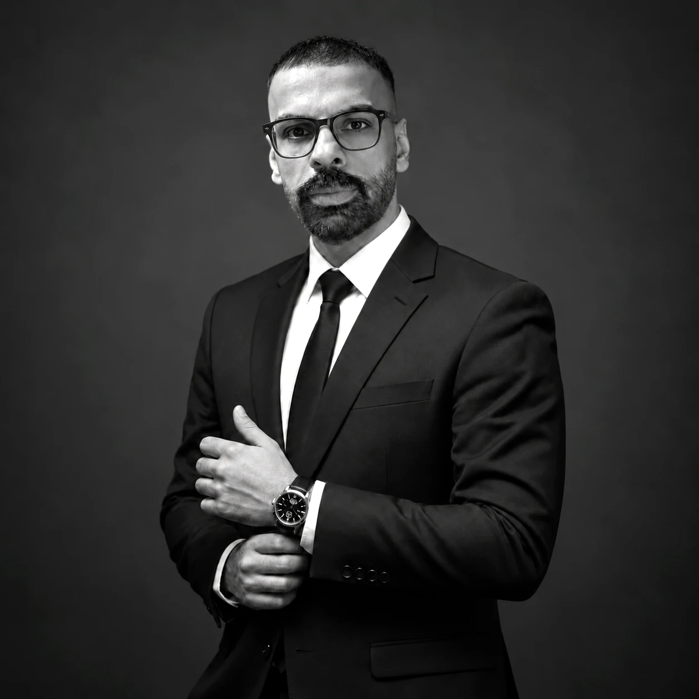
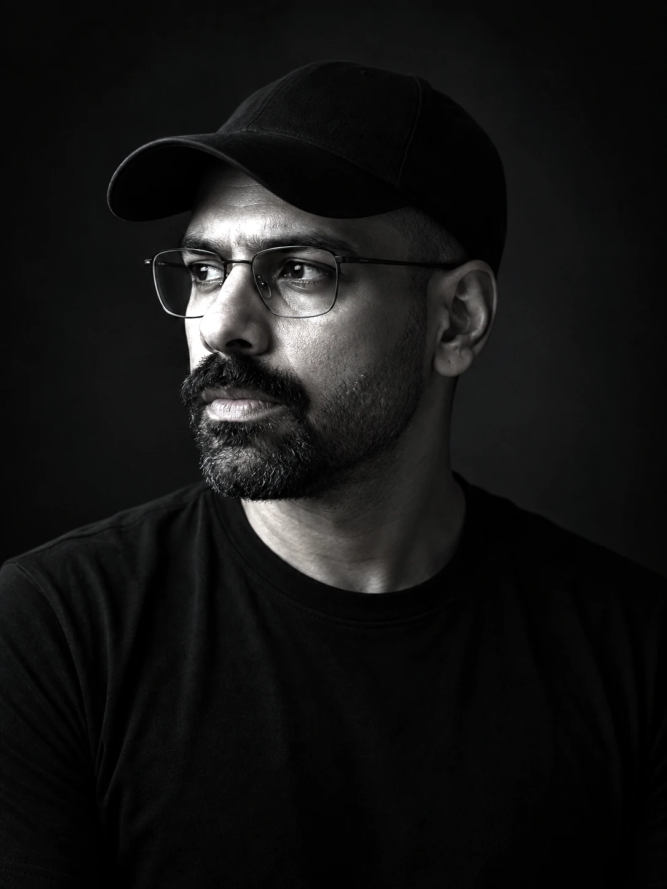

A journey from internet education to systems architecture.
Beginning with internet services and computer training in Iraq in 2004, the founder’s career evolved through online business, software products, financial technology and digital transformation concepts.
Founder & Technology Entrepreneur
Professional work began in 2004 with an internet café, digital literacy training and a short-term assignment supporting computer adoption at an Iraqi irrigation-projects office. The subsequent path encompassed online training, advertising software, digital products, payment concepts, trading technology and systems design.

Professional milestones
Internet services and computer training
Early internet café, public digital literacy and short-term administrative training support.
Online education and digital marketing
Training activities and the Professional Trainers Team, with surviving public video evidence.
Advertising and product engineering
Advertising systems, internet ventures and digital payments concepts.
Technology ventures and fintech
Venera Finance LTD, Nuxese, PayNXS and VeneraSwap-related work.
AI systems and national concepts
Cylendra development and proposals for institutional digital infrastructure.

From early internet education to digital infrastructure
The founder’s journey began in Iraq in 2004 with hands-on computer and internet education. This informal portrait accompanies the personal story, while the formal portrait is reserved for leadership and institutional use.